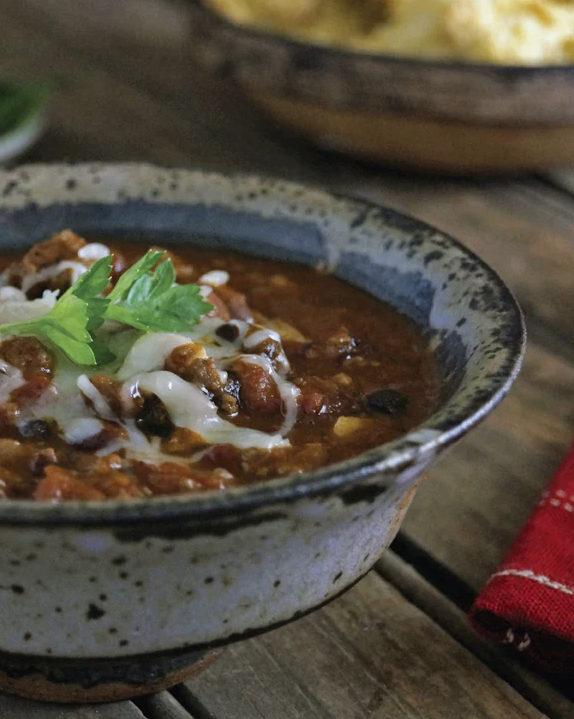

DRAGONBREATH CHILI

While this chili is unlikely to make you breathe flames, it lives up to its name in all other ways. Thick and flavorful, with just enough of a bite to satisfy, it's a hearty dish popular with melee types, who credit it with giving them a fighting edge before important battles. The original recipe comes from the swampland of Dustwallow Marsh in Kalimdor, but this version is a little different: No dragons were harmed in making it.
INGREDIENTS
- 2 tablespoons vegetable oil
- 1 chili pepper, minced
- 2 thai peppers, minced
- 1 dried chipotle pepper, diced
- 1/2 onion, diced
- 1 pound ground beef
- 1 pound sausage
- 1 pound chuck steak
- 2 teaspoons ground cumin
- 1 teaspoon each, cinnamon and cocoa
- 6 oz tomato paste
- 12 oz beer
- 2 cups beef broth
- 30 oz chili beans
- 56 oz diced tomatoes
- cheddar cheese for topping
STEPS
- Add the oil to a large stockpot over medium heat. Add the peppers and the onion, then cook for about 5 minutes, or until brown and soft. Add the ground beef, sausage, and steak, stirring until all the meat is browned, another 5 minutes or so.
- Add all the spices, followed by the tomato paste, and stir so the spice and paste are evenly distibuted. Pour in the beer and the beef broth, then add the beans and diced tomatoes. Lower the heat to a simmer and cook, uncovered, for about 2 hours, until the chili has thickened somewhat. Scoop into bowls and top with cheese.
CHEF'S NOTES:
This recipe is on the milder side, but I encourage you to amp up the spice level till you're breathing fire! Also, choose a beer you like, but one that isn't too hoppy.